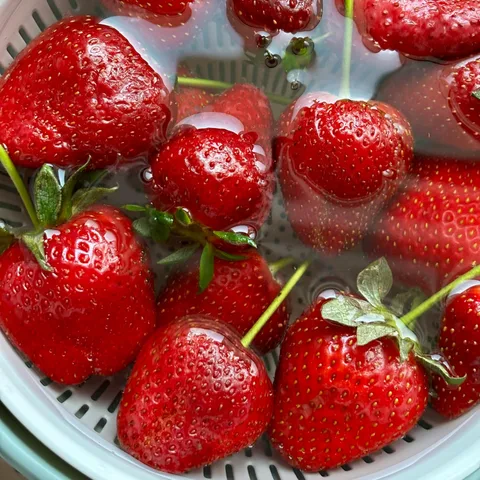
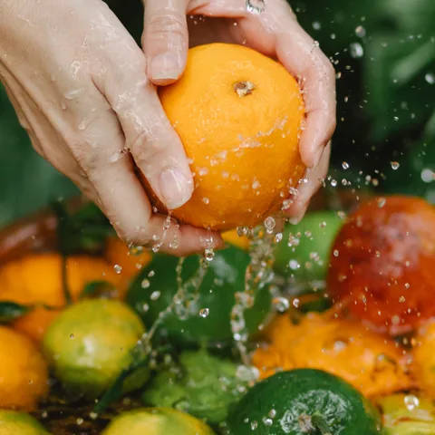
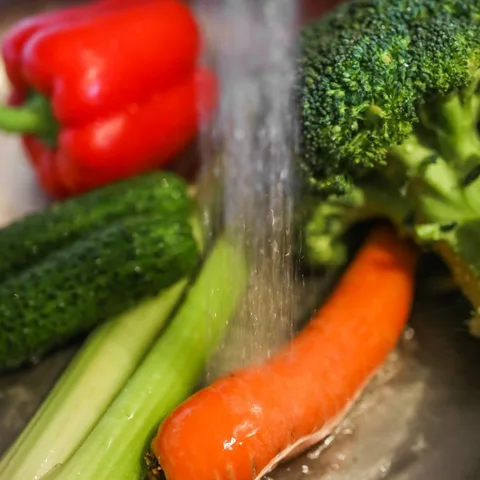

What can I do?
How to wash your fruit and veg, and what washing can’t do.
How to wash your fruit and veg
Washing won’t turn a sprayed strawberry organic, but it’s free, it takes a minute, and it shifts more than you’d think. A 2026 review of nearly 50 studies found a plain rinse removes around a third of surface residues on average, and a soak in bicarbonate of soda or vinegar about half (de Montagnac et al., 2026).
The everyday rinse
- Wash just before you eat or cook it. Not when you unpack the shopping - damp produce spoils faster in the fridge.
- Hands first. Then rub each piece under cool running water for at least 20 seconds.
- Scrub anything firm. Potatoes, carrots, apples, cucumbers, pumpkin. A clean veg brush does the job.
- Skip the soap. Detergent isn’t made to be eaten, and food safety authorities advise against it. Water is enough for an everyday wash.
- Wash organic too. Organic means fewer synthetic sprays, not no soil or bugs (Better Health Channel, n.d.).
How to Soak the Dirty Dozen

For strawberries, grapes, apples, leafy greens and anything else on the Dirty Dozen, a soak is worth the extra ten minutes.
- Bi-carb: 2 teaspoons in a litre of cool water. That’s the strength used in a 2017 apple study, where it beat both tap water and the bleach wash used commercially (Yang et al., 2017).
- Or vinegar: 1 part white vinegar to 3 parts water (de Montagnac et al., 2026). Rinse well afterwards, unless you like your salad tasting like hot chips.
- Soak for 10-15 minutes. Berries about 10, so they don’t go soggy.
- Lift, don’t pour. Lift the produce out so the grit stays in the bowl, then give it a final rinse under the tap.
- Pick one, not both. Bi-carb and vinegar cancel each other out.
Fruit

- Berries. Wash only what you’re about to eat. A colander sitting in a bowl makes the soak and lift easy. See the berry guide ↓
- Citrus. If a recipe calls for zest, scrub the skin well first, or use organic. Australian packers often add fungicide to the wax coating to stop mould in storage (Australian Pesticides and Veterinary Medicines Authority [APVMA], n.d.; Cunningham et al., 2007).
- Firm fruit (eg. apples, pears). Scrub under running water with a clean brush.
- Grapes. Keep them on the stem, soak in a colander, then lift and rinse. Pick them off as you eat them.
- Rockmelon. Scrub the rind before you cut it. The knife can carry whatever’s on the skin into the flesh (CSIRO, 2018).
- Soft fruit (eg. stone fruit, tomatoes). Too soft to scrub - rub gently with your fingers under running water, or soak.
Vegetables

- Broccoli and broccolini. Soak head-down, so the water gets into the florets.
- Capsicum. Rinse well, paying attention to the stem end.
- Celery. Separate the stalks and wash the base of each one, where dirt collects.
- Garlic and ginger. Peel them. Washing doesn’t do much for ginger, so if you use it every day, go organic.
- Leafy greens. Remove the outer leaves (NSW Food Authority, 2023), separate the rest, then soak and swish. A salad spinner dries them in seconds.
- Potatoes, cucumbers and carrots. Peel them. Peeling removes more residue than any wash, though you lose some fibre with the skin (Keikotlhaile et al., 2010).
Cooking? Blanching and boiling bring residues down further, which is why frozen beans make our Tread Carefully list (Keikotlhaile et al., 2010).
What washing can’t do
Washing only reaches the surface. Some pesticides are designed to move through the whole plant, and others soak in through the skin. In the 2017 apple study, a fungicide had travelled 80 micrometres into the fruit (about the thickness of a sheet of paper), where no wash could reach it (Yang et al., 2017).
That’s why washing is your daily habit, and the guides are your shopping list.

Tip
Grow your own greens. Spinach, lettuce, kale and silverbeet are among the easiest things to grow in a pot or a patch, and they're some of the hardest to clean of residues. A few pots of greens takes a big item off the Dirty Dozen.
References
- Australian Pesticides and Veterinary Medicines Authority. (n.d.). Deccozil EC fungicide [Product label]. https://elabels.apvma.gov.au/50077ELBL.pdf
- Better Health Channel. (n.d.). Food, pesticides and other chemicals. Victorian Government. https://www.betterhealth.vic.gov.au/health/HealthyLiving/food-pesticides-and-other-chemicals
- CSIRO. (2018, March). Listeria in rockmelons: What you need to know. https://www.csiro.au/en/news/All/Articles/2018/March/listeria-in-rockmelons-what-you-need-to-know
- Cunningham, N. M., Steciuk, K. A., & Taverner, P. D. (2007). The effect of postharvest applications of imazalil in wax on decay and sporulation caused by Penicillium digitatum on late picked navel oranges [Conference abstract]. Australasian Postharvest Conference, Terrigal, NSW, Australia. https://www.phtnet.org/research/download/pdf/md188.pdf
- de Montagnac, D., et al. (2026). Reducing pesticide residues on produce: A scoping review of household produce washing methods. Frontiers in Environmental Health, Article 1768399. https://doi.org/10.3389/fenvh.2026.1768399
- Keikotlhaile, B. M., Spanoghe, P., & Steurbaut, W. (2010). Effects of food processing on pesticide residues in fruits and vegetables: A meta-analysis approach. Food and Chemical Toxicology, 48(1), 1–6. https://doi.org/10.1016/j.fct.2009.10.031
- NSW Food Authority. (2023). Fresh cut fruit and vegetables [Fact sheet]. NSW Government. https://www.foodauthority.nsw.gov.au/media/1316
- Yang, T., Doherty, J., Zhao, B., Kinchla, A. J., Clark, J. M., & He, L. (2017). Effectiveness of commercial and homemade washing agents in removing pesticide residues on and in apples. Journal of Agricultural and Food Chemistry, 65(44), 9744–9752. https://doi.org/10.1021/acs.jafc.7b03118